항만 공간 재생디자인 트렌드 — West Bund
과거 경제성장을 위주로 발전되었던 대부분의 대도시는 기능을 위주로 디자인되고 계획되어왔기 때문에 사용자인 사람이 소외되는 현상을 야기 시켜왔는데 이는 디자인과 계획이 효율성과 기능 그리고 생산성에 그 초점이 맞춰졌기 때문이다. 산업 발전을 목표로 디자인이라는 개념도 산업디자인 중심으로 발전되어 왔으며 ‘산업디자인진흥법’을 근거로 디자인은 산업 발전의 수단으로 활용되어 왔다. 하지만 이러한 흐름에 변화가 생기기 시작하는데 디자인이 가지고 있는 소위‘디세뇨’라는 개념적이고 가치중심적인 부분에 대한 중요성이 대두되기 시작 한 것이다. 2016년 ‘공공디자인진흥법’이 제정되면서 디자인은 산업발전의 수단이 아닌 도시 공공환경의 사람중심 가치를 만들어 내는 수단으로 변화되기 시작하였다. 현재 연구되고 있는 공공디자인진흥계획 등은 ‘생활안전을 더하는 공공디자인’, ‘모든 이를 위한 디자인’, ‘생활편의를 더하는 공공디자인’, ‘품격을 높이는 공공디자인’이라는 4개의 대 주제 하에 15개의 하위 상세 주제를 가지고 디자인을 계획 수단으로 진행되고 있다. 이는 단순한 하나의 현상이 아니라 ‘디자인’의 원래 목적 중 하나인 문제 해결을 위한 방법으로서의 기능을 찾아가는 흐름으로 이제는 하나의 트렌드로 도시 문제에 대해서도 디자인으로 해결하고자 하는 여러 움직임들이 나타난다.
뿐만 아니라 육역에서는 요즘 한창 도시재생 뉴딜 디자인 계획과 도시재생활성화계획 등이 치열한 경쟁 속에 지자체별로 수립되어가고 있으며 이러한 계획은 물리적 시설과 공사 중심이 아닌 사회적 공동체 가치 구현, 친환경적 지속가능성, 마을단위 소경제 활성화 그리고 문화적 수준의 향상 등 인간 중심의 삶의 질 향상을 궁극적 목표로 하고 있다. 또한 건축기본법과 건축정책기본계획을 근거로 국가기간시설에 대한 공간환경적 측면에서의 개선을 문화적 측면의 보강을 요구하고 있다.
1차적 기능을 다한 항만의 공간을 디자인관점에서 계획하고자 하는 공간디자인의 개념은 기존의 기능 외에 부가적인 가치를 부여할 수 있는 폭넓은 관점에서 고민하는 것이 중요하다. 소위 경관적으로 예쁘고 기능적으로 효율적인 항만공간이 문화적으로 풍부하고 사용자 관점에서 안전하고 배려되는 공간으로 개선될 수 있는 가치지향적인 계획을 수행하는 것이다.
특히 항만을 중심으로 발달해 왔던 항만도시는 대규모의 물류이동수단의 변화에 의하여 상당한 도시기능마저 상실하였을 뿐 아니라, 도시민들의 쾌적한 도시생활에 대한 권리를 빼앗는 결과도 초래하였다. 따라서 항만 공간 또는 이전부지에 공공적 개념의 쾌적성 확보를 위한 공간 환경 및 시설디자인 계획이 절실하며 항만 수변 환경의 질적 개선에 대해 환경적, 전략적, 친수적, 사용자 중심 관점에서 새로운 역할과 문화적 기능의 재생이 요구되고 있다. 이러한 맥락에서 항만공간과 같은 국가 기간시설에 대한 공공디자인적 관점의 재생화 디자인과 더 나아가 해양 항만을 공간적 차원의 디자인 요소 개발과 활용에 대한 새로운 시도가 있어야 한다. 본 기고에서는 항만 수변공간의 새로운 기능 부여를 통해 재생을 성공적으로 이끌고 있는 중국 상하이의 West Bund지역의 사례를 중심으로 살펴보고자 한다.
1.상하이 워터프론트 재생 West Bund
그림 1 West Bund 위치도
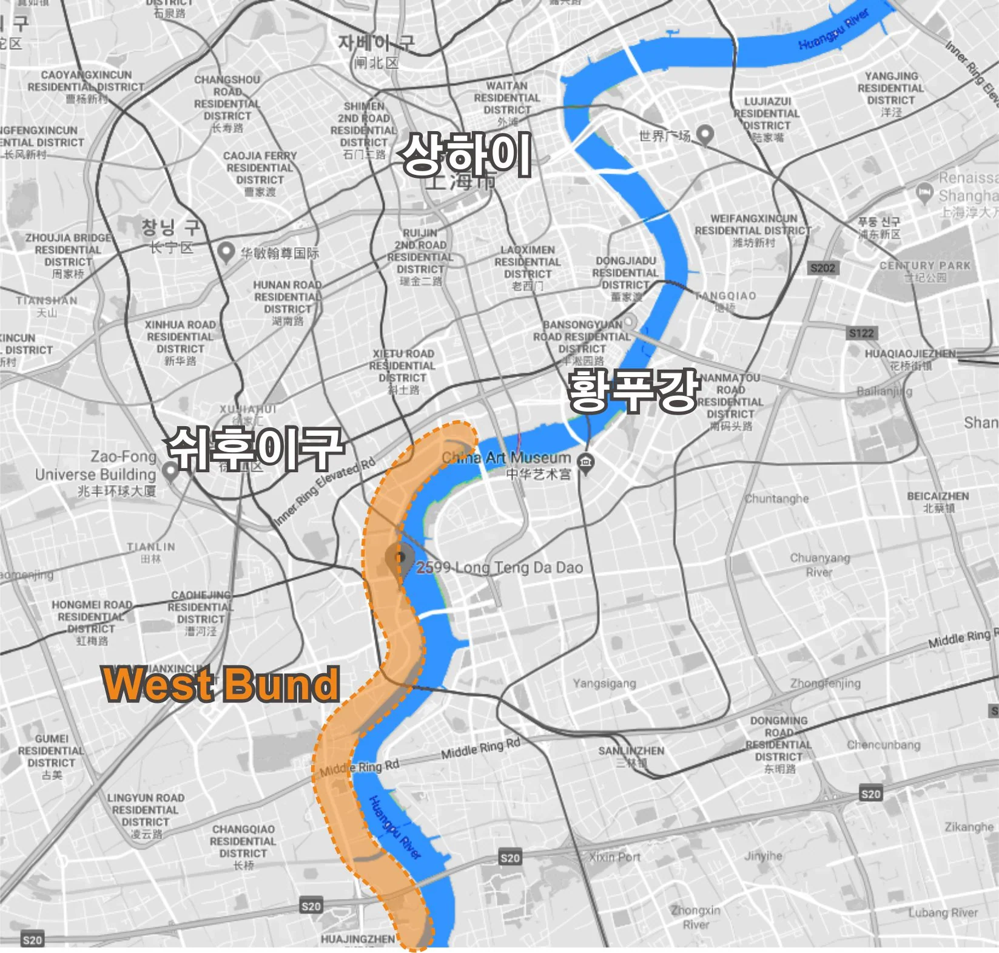
West Bund는 상하이시 서쪽에 위치한 쉬후이 (Xuhui) 지구의 남서쪽에 위치하고 있으며 그 경계는 북쪽의 리후이항(Rihui Port)과 동쪽의 황포강(Huangpu River)에 인접하고 있으며 West Bund는 서쪽으로는 롱후아항(Longhua Port)과 완핑로드(Wanping Rd) 그리고 남쪽으로는 아우터링 고속도로(Outer Ring Express way)를 경계로 하고 있는 3.6km의 워터프론트 공간이며 롱텅다다오(龙腾大道)라고 불리기도 한다. West Bund는 100년 넘게 중국의 운송, 물류 및 생산의 중심지인 쉬후이(Xuhui)지구에 위치하고 있었기 때문에 자연스럽게 항만기능과 산업, 물류 시설이 자리를 잡게 되었다. 이러한 입지조건과 광활한 공간 및 수많은 수로는 Longhua 공항, Shanghai Nanpu 기차역, Beipiao 석탄 부두 및 Shanghai Cement Factory와 같은 산업 시설까지 번성하게 만들었으나 물류 환경의 변화와 산업구조의 변화 등으로 쇠퇴하게 되어 새로운 도시 재생 프로젝트를 통해 다시 태어나게 된다.
그림 2 West Bund 토지이용계획
Image : www.randian-online.com
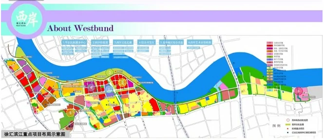
그림 2 West Bund 워터프론트 전경
Image : www.westbund.com
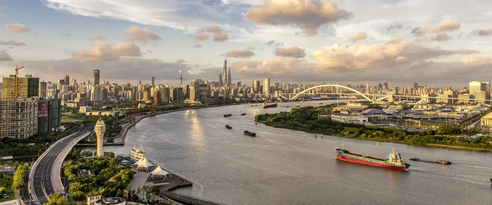
중국 도시 재생 프로젝트의 계획아래 롱텅다다오의 항만공간과 산업단지 일대를 예술, 미디어, 테크놀로지, 문화 산업이 공존하는 문화복합단지를 만들고 West Bund라
그림 4 기존항만시설을 통한 재생
Image: www.shine.cn
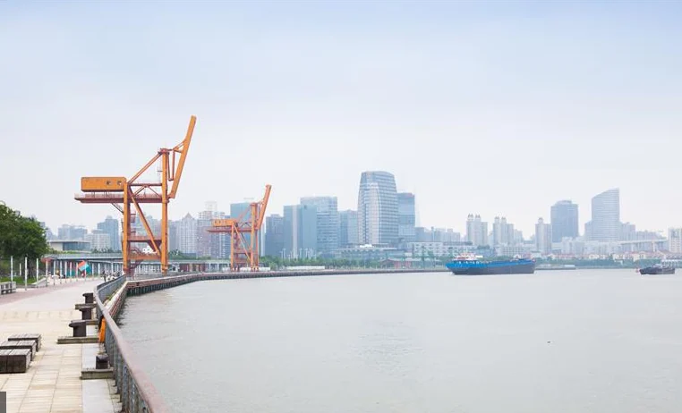
불리는 예술 단지로 재생하게 된다. 항만 수변 공간에 문화 재생 사업을 진행하는 프로젝트는 2010년 대중에게 공개되었고 지금은 모든 종류의 레크리에이션 활동 및 문화 예술 공간으로서 인기 있는 장소로 각광받고 있다. West Bund 지역에서는 상하이 월드 엑스포 (Shanghai World Expo)현장과 호탄 공원(Houtan Park), 황포(Huangpu)를 조망도 할 수 있어 천혜의 워터프론트로 입지조건도 지녔다.
그림 3 West Bund 워터프론트 야경
Image : www.archdaily.com
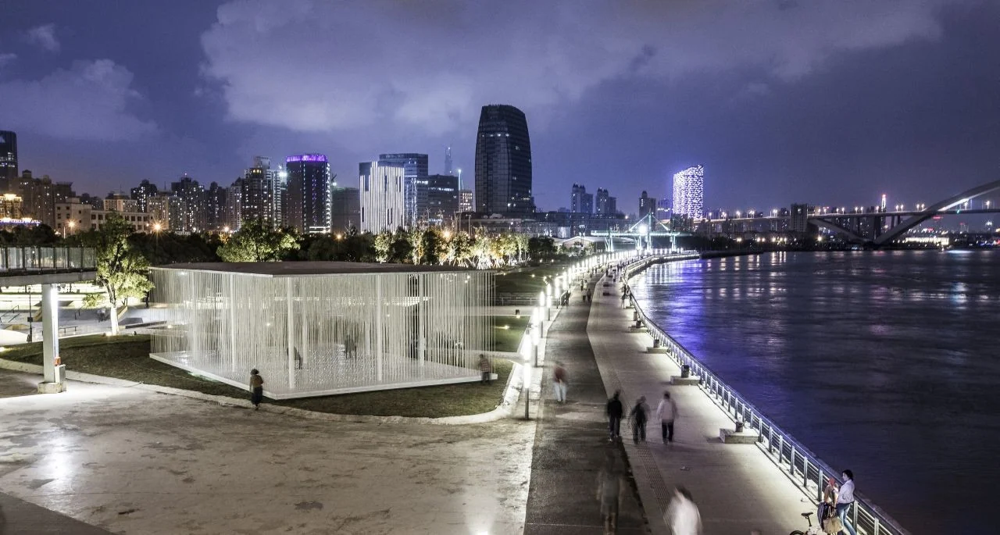
베이루트의 코니크 (Corniche) 해변 산책로에서 영감을 얻었다 하는 West Bund의 공공공간에서는 상하이의 독창적인 역사적 문화와 아웃 도어 레크리에이션 서비스를 제공하는 편의공간이 만나 통합적이고 멋진 워터프론트 풍경을 창출하고 있다.
그림 6 West Bund 공공공간
Image : www.westbund.com
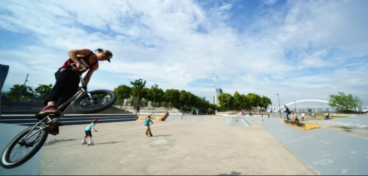
그림 7 아디다스 런베이스 (Adidas Runbase)이벤트
Image: www.sohu.com
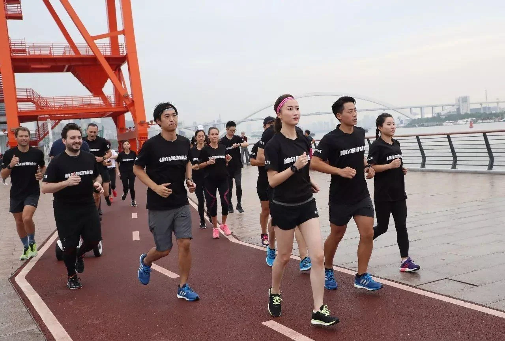
West Bund는 공간을 방문하는 사용자 모두를 위해 서비스를 제공하는 포괄적이고 개방된 공간을 목적으로 디자인되어 있다.
Binjiang Avenue를 따라 도시의 독특한 수변 경관을 감상하거나 자전거 타기를 즐길 수 있으며 아디다스 런베이스 (Adidas Runbase)를 통해 이벤트에 참여하고 조깅과 같은 운동도 할 수 있다. 야외 등반 벽과 스케이트 공원 등 공공공간의 활동성을 극대화 할 수 있는 다양한 프로그램들이 준비되어 있고 또한 수많은 아트 갤러리와 문화 공간 등이 입주하였다. 이곳이 예전 산업발전의 중심 역할을 했다면 이제는 문화발전의 중심역할을 지닌 상하이의 문화 촉매 지역이 된 것이다.
2. West Bund의 주요 프로젝트
Shanghai West Bund는 문화, 예술, 미디어, 패션, 디자인 및 혁신 금융 분야에서 국내외 리더들을 모아 진행한 야심 찬 재생 프로젝트로 세계 최고 수준의 워터 프론트를 창출을 목표로 진행되었다. 이 지역을 국제 문화 및 금융 중심지로 전환시키기 위해 두 가지 핵심 사업이 먼저 시작되었는데 "West Bund Culture Corridor" 및 "West Bund Media Port "이다.
그림 8 롱 뮤지엄 (Long Museum)
Image : www.iconeye.com
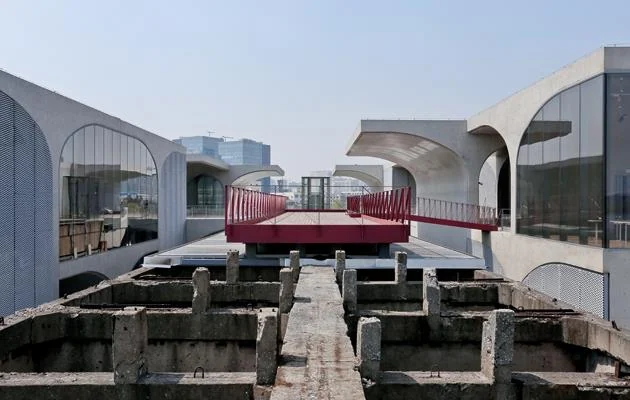
이를 위해 Shanghai Dream Center, Tencent, Hunan Mango 문화 투자, Shenyin Wanguo Securities 및 West Bund Fortune National Center와 같은 유명 단체 및 회사를 유치하도록 했고 롱 뮤지엄 (Long Museum), 유즈 뮤지엄 (Yuz Museum), 상해 사진 센터 (Shanghai Center of Photography), 상하이 하트 갤러리 (Shangh ART Gallery)와 같은 순수 미술 문화 중심 기관들도 이 곳에 입주하도록 하였다. 또한 음악 축제, 건축 및 현대 미술 비엔날레, 예술 및 디자인 박람회 프로그램 사업을 통해 Shanghai West Bund를 문화, 상업 및 행사의 중심지로 만들고자하였다.
그림 9 롱 뮤지엄 (Long Museum)
Image : www.iconeye.com
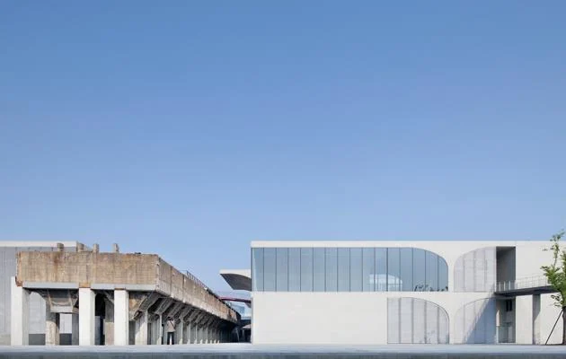
West Bund Culture Corridor
West Bund 문화회랑 조성 사업
2011년 "발전을 위한 문화 산업 발전"정책을 통해 이 지역의 워터 프론트 (Xuhui Waterfront)의 포괄적인 개편을 위한 기반을 마련하게 되었는데 이것은 "West Bund Culture Corridor"를 조성하기 위한 전략의 실질적 시작이었다. 2012년 수후이 워터 프론트 (Xuhui Waterfront)에 있는 롱 뮤지엄 (Long Bund)과 유즈 뮤지엄 (Yuz Museum)이 개장함으로서 문화 네트워크 재생의 서막을 알렸다.
롱 뮤지엄(Long Museum)은 화물기차의 물류를 담당하던 곳 이었다 이를 예술 갤러리로 재생시켰는데 이곳에는 아직도 당시의 사일로와 기차레일 등을 그대로 유지해 놨고 이것들은 매끈한 콘크리트 건물과 대비되어 멋스럽고 고풍스럽게 조화를 이루고 있다. 영국 테이트 모던식 재생기법의 아류작이라고도 볼 수도 있는데 중국의 유명한 예술품 수집가 리우 이치엔과 왕웨이가 개설한 미술관이다.
그림 10 롱 뮤지엄 (Long Museum)과 연결된 기찻길의 흔적
그림 12 유즈 뮤지엄 (Yuz Museum)의 실내 전시장
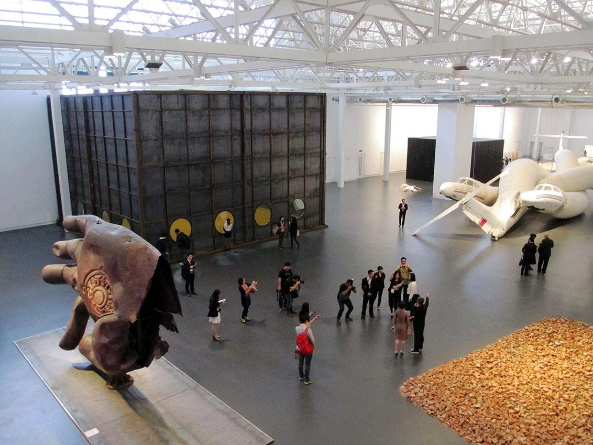
유즈 뮤지엄 (Yuz Museum)은 과거 롱화 공항 격납고(Longhua Airport hangars)를 확장 재생한 건물이다. 강렬한 빨간색 색채와 투명한 유리로 꾸며진 외관은 이곳이 항공기 격납고였나 하는 의구심도 들게 한다. 예술 전시가 이뤄지는 실내는 격납고답게 약 9,000m2의 규모를 가지고 있다. 규모가 크다 보니 설치 중심의 대형 예술 전시들이 자주 이뤄지고 있다.
그림 13 유즈 뮤지엄 (Yuz Museum) 조감도 이미지
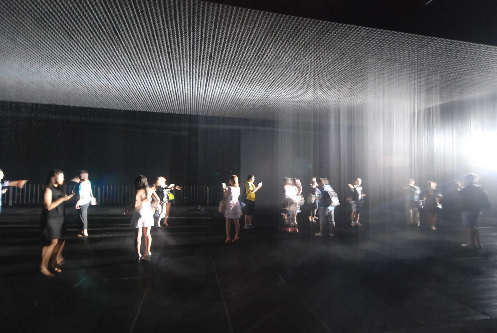
그림 15 항공기 격납고를 활용한 유즈 뮤지엄 (Yuz Museum) 실내 문화공간
그림 17 웨스트번드 아트센터(West Bund Art Center)내부
Image : www.westbund.com
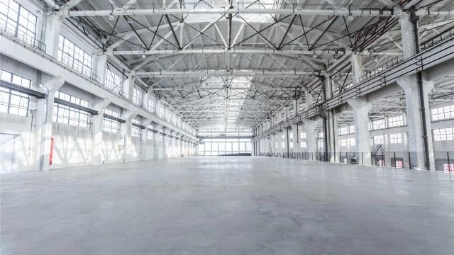
그림 18 웨스트번드 아트센터(West Bund Art Center)야경
Image : www.westbund.com
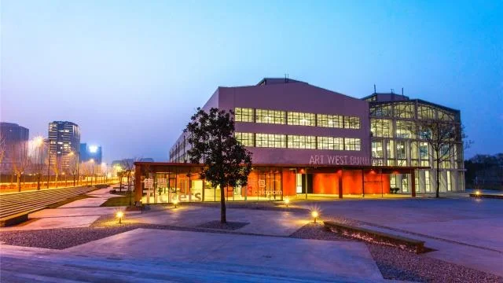
웨스트번드 아트센터(West Bund Art Center)또한 항만공간에 인접해 있던 산업시설을 재생시킨 사례이다. 이곳은 상하이 항공기 공장(1950-2009)이었던 곳으로 중국이 독자적으로 개발하고 제조한 최초의 대형 제트 추진 여객기 탄생지였다. 그 이후 2015년 폐공장이었던 곳을 West Bund를 상징하는 아트센터 건물로 재생시켰다. 각종 아트 디자인관련 전시회가 수시로 열리고 West Bund의 랜드마크로 불린다.
West Bund Media Port
West Bund 미디어 항 만들기
두 번째 재생개발 목표는 West Bund Media Port라는 새로운 프로젝트로 "박물관 거리"를 풍부하게하면서 West Bund의 비즈니스 클러스터를 활용하여 예술, 엔터테인먼트 미디어, 문화 및 금융 분야에서의 이 지역의 입지를 더욱 강화하는 것이다. 스타 박물관 (Star Museum), 오일 탱크 공원 (TANK SHANGHAI), 웨스트 번드 박물관 (West Bund Museum) 및 워터 프론트 극장 (Waterfront Theatre)이 이 프로젝트의 일환으로 입주하였다.
그림 19 TANK SHANGHAI Masterplan
Image : www.westbund.com
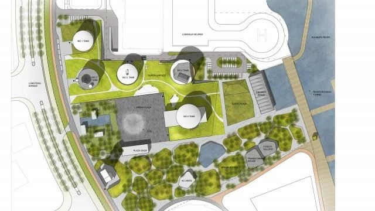
TANK SHANGHAI 단지는 전시 공간, 광장, 정원, 서점, 교육 센터, 레스토랑 등으로 구성된 현재 진행 중인 복합 문화 단지인데 그 규모는 면적 60,000m2이며 실내공간은 10,000m2에 이른다. TANK SHANGHAI의 대상지 역시 Longhua 공항의 일부였으며 공항의 기능을 유지하기 위해 5개의 오일 탱크, 화재진압용 풀(pool), 부두 및 기타 시설을 갖추고 있었다. 오일 탱크 내부에는 15미터 높이의 돔과 원형 벽이 있는데 이는 넓고 우아한 공간을 창출해내며 화재진압용 풀(pool)은 황푸 강을 마주보고 있는 아름다운 연못으로 바뀔 것이다.
그림 20 TANK SHANGHAI 공사현장
Image : www.archive.shine.cn
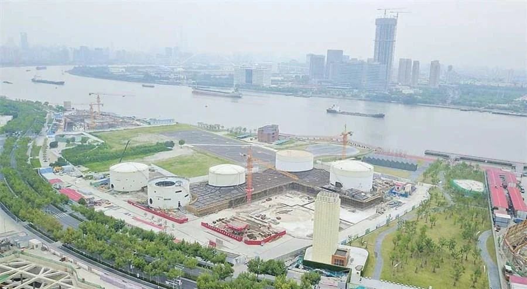
그림 21 TANK SHANGHAI 조감도
Image : www.westbund.com
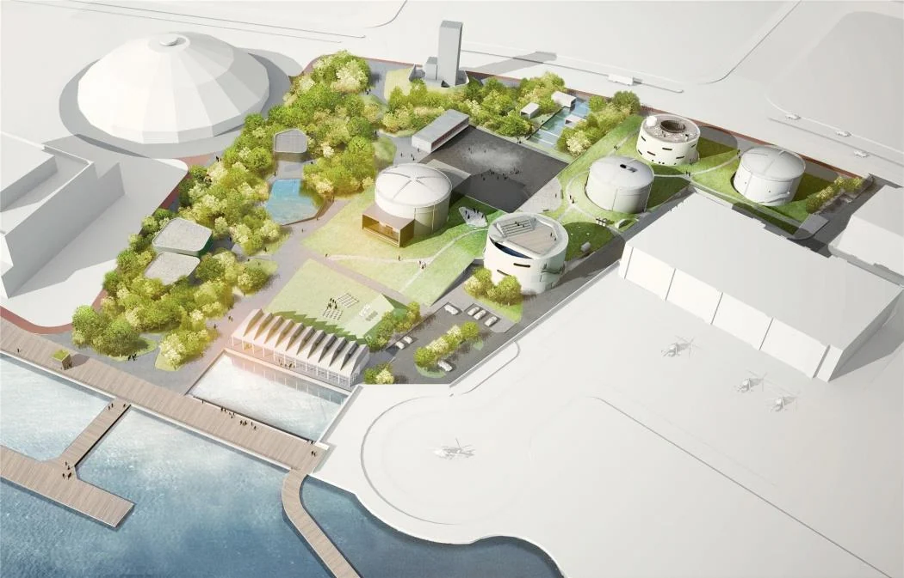
그림 22 TANK SHANGHAI 투시도
Image : www.westbund.com
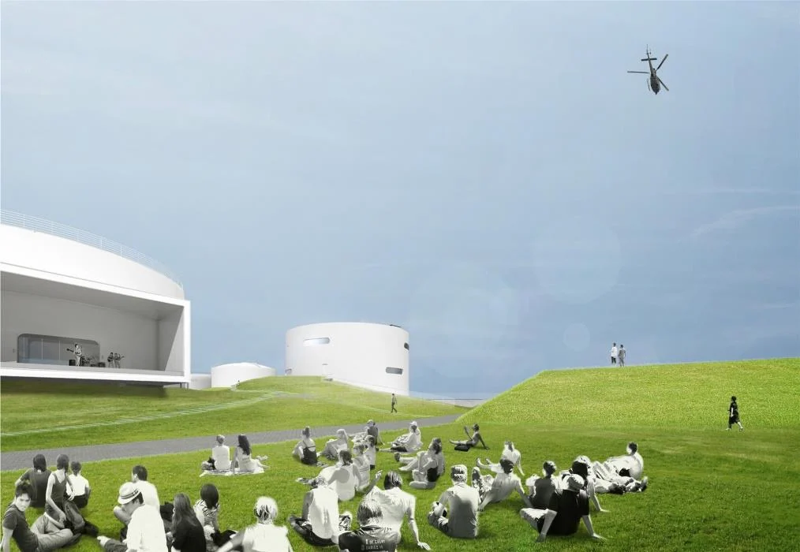
그림 23 TANK SHANGHAI 탱크공간 활용
Image : www.westbund.com
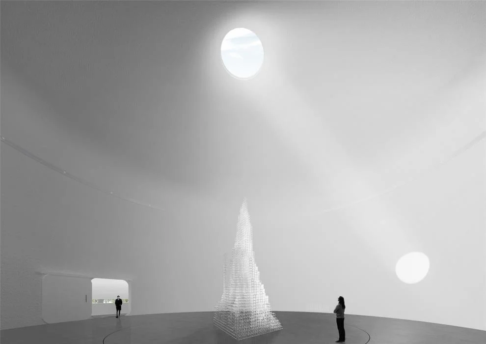
또한 버려진 오일 탱크는 예술과 생활을 위한 문화 탱크로 변모되며 다양한 예술 관련 프로그램이 도입되어 이 공간을 활발하게 만들게 될 것이다. 또한 경관적으로 거대한 '도시의 숲'이 만들어 지는데 이것은 새로운 도시의 예술 공원이 될 것이다.
TANK SHANGHAI 프로젝트를 통해 대중에게 현대 미술에 쉽게 접근 할 수 있게 하고, 예술, 자연 및 도시 간의 연계성을 회복시키면서 도시 문화생활을 향상 시켜 상하이 West Bund 문화 예술 활동의 새로운 허브가 될 것으로 보인다. 또한 TANK SHANGHAI 프로젝트가 West Bund 지역적 특징과 어우러져 지역 문화산업의 형성을 촉진하는 역할도 수행할 것으로 보인다.
TANK SHANGHAI 프로젝트는 우리나라 상암동 석유비축기지의 오일 탱크를 재생한 문화비축기지와 유사한 프로젝트로서 산업생산중심의 트렌드가 문화중심으로 옮겨가는 큰 흐름을 보여주고 있다.
3. West Bund의 시사점
그림 24 West Bund 전경
Image : www.westbund.com
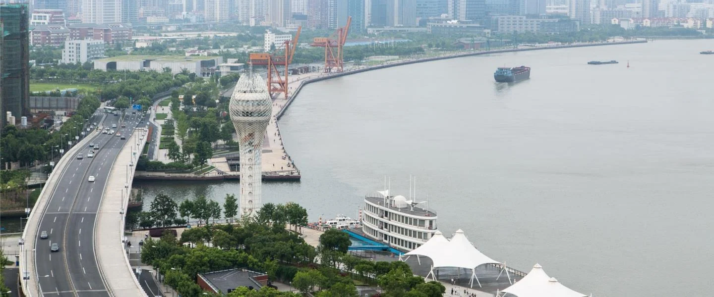
West Bund 뿐 아니라 전 세계적으로 산업발전을 위해 수많은 항만, 산업단지들이 그 역할을 충실히 해왔다. 그 시대의 트렌드에 맞게 많은 개발 사업이 필요하였고 그 개발은 재개발로 이어지며 산업화 시대에 승승장구하여왔다. 하지만 모든 단계가 발전-성숙-쇠퇴의 길을 걷듯이 우리 도시뿐 아니라 수많은 산업지원시설들도 일부 사용 페기가 이뤄지고 있다. 이제는 이를 또 다른 개발이 아닌 재생의 개념으로 바라봐야 한다.
그림 25 West Bund 워터프론트 코리더
Image : www.westbund.com
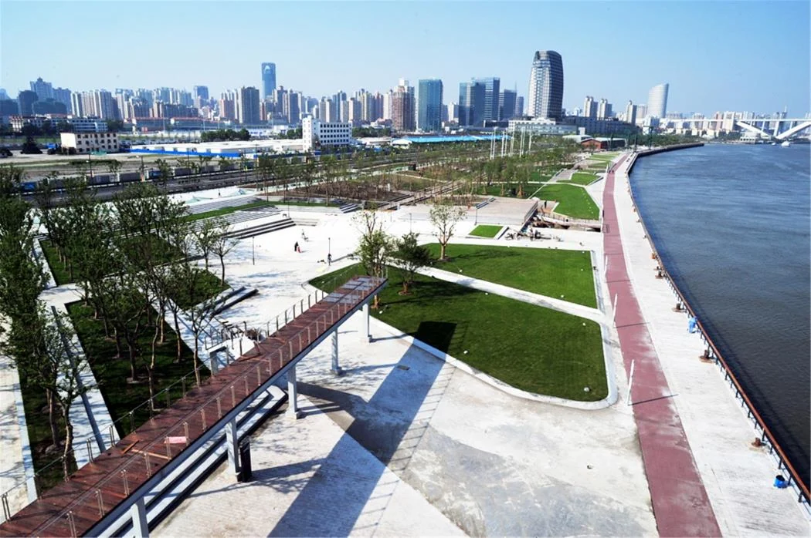
영국과 같은 선진국의 경우 재생의 개념을 제일 먼저 만든 나라이기도 한데 런던의 카나리 워프 (Canary Wharf)를 물류 항만에서 세게 금융권의 중심지로 재생시켜 새로운 경제 동력원이 작동하도록 디자인 하였다.
그림 26 런던의 카나리 워프 (Canary Wharf)의 아이스 링크 문화 이벤트
Image : www.londontown.com
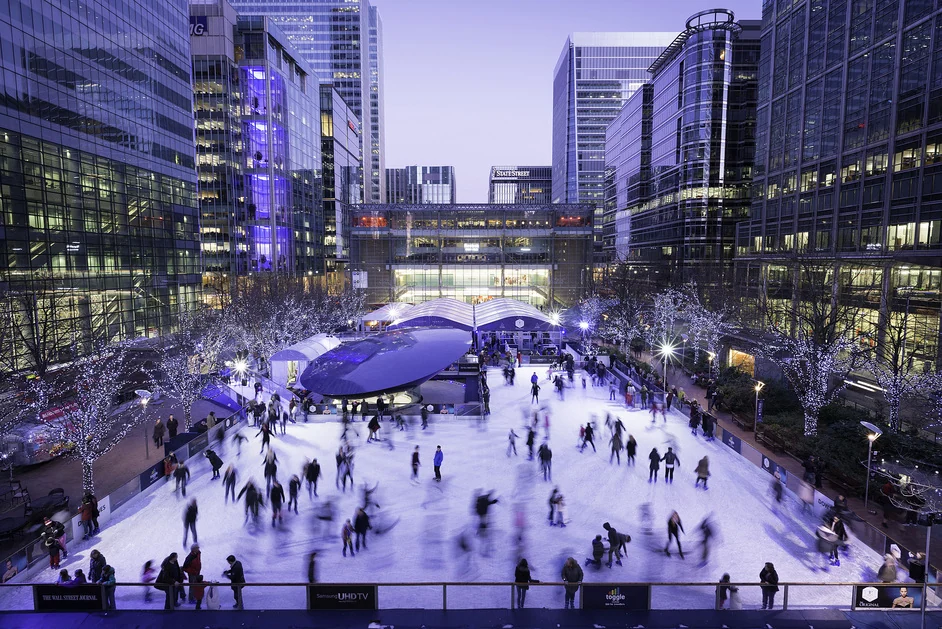
그림 27 독일의 함부르크(Hamburg) 하펜시티 전경
Image : www.guiding-architects.net
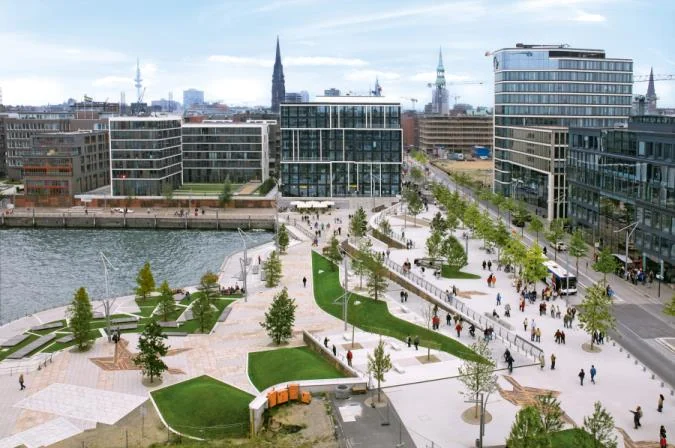
수자원환경을 적극 활용해 문화와 교육으로서의 지식기반산업과 함께하는 친환경도시로 재생시킨 독일의 함부르크(Hamburg) 하펜시티의 경우도 비슷한 사례이다.
이제 1차적 기능을 다한 항만의 공간은 친수성과 접근성 및 충분한 공간을 지닌 입지적 특성을 살려 산업생산 지원기지에서 문화 경제생산 지원기지로서의 소프트웨어적 관점으로 다시 태어나는 ‘재생(再生)’의 전략을 활용하여야 한다.